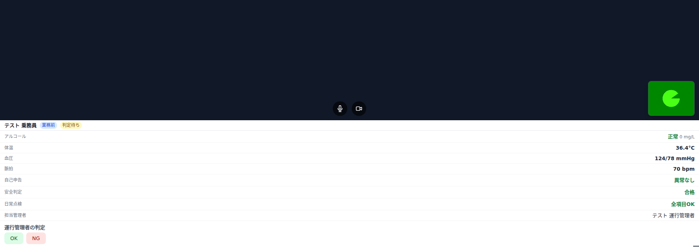
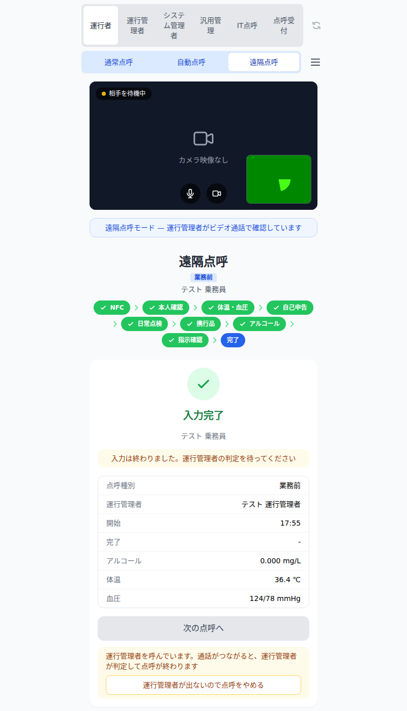

PRODUCT BROCHURE
一歩庵点呼
遠隔点呼・自動点呼システム — 遠隔点呼の機能と性能
運転者は営業所の点呼台で、生体認証による本人確認からアルコール測定・健康状態の確認・指示事項の確認までを画面に沿って進めます。 運行管理者は離れた営業所の席で、映像と音声で運転者と通話しながら測定結果と運転者の情報を確かめ、判定します。点呼の内容は修正・削除できない点呼記録として残ります。
構成機器
| 点呼端末 | PC・タブレット (ブラウザで動作)。点呼の画面・映像と音声の通話に使います |
|---|---|
| アルコール検知器 | タニタ FC-1200。点呼端末に接続し、測定値 (mg/L) を自動で取り込みます |
| 指静脈認証装置 | Vein Station / Vein Base (一歩庵製、NFC リーダー内蔵)。運転者は点呼の始め、運行管理者は通話の前に照合します |
| 体温計・血圧計 | Bluetooth で測定値を自動で取り込みます (血圧計: オムロン HEM-6231T・HCR-1901T2 ほか) |
| 監視カメラ | 点呼台の運転者の全身を撮影・録画します。録画は運行管理者の席で見られます |
| 運行管理者の席 | PC・カメラ・マイク・指静脈認証装置。着信を知らせる警告デバイスをつなげます |
| サーバ | 一歩庵点呼サーバ (クラウド)。点呼記録・故障記録を保存し、営業所の間で共有します |
遠隔点呼の流れ
免許証 (NFC)・社員番号→指静脈で本人確認→体温・血圧→自己申告→日常点検→携行品→アルコール測定→指示事項の確認→運行管理者を呼ぶ→運行管理者が指静脈で本人確認→ビデオ通話で確認→OK / NG の判定→点呼記録
青: 運転者が点呼台で行う段 黄: 運行管理者の席で行う段。前の段が済まないと次へ進めません。
画面と機器




一歩庵点呼 遠隔点呼の機能と性能1 / 2